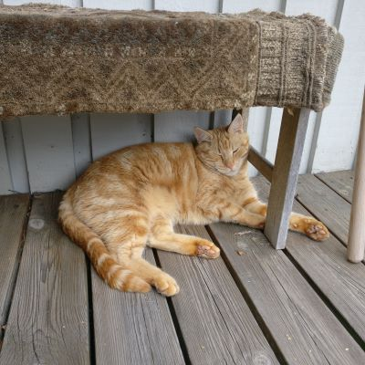

A Little About Me
In this section I will introduce myself a little bit and as time goes on I will add to it if I feel like it.
My name is Peter Fänge but most people call me Pelle. In my free time I enjoy gaming on PC and while I enjoy playing single-player games I often play together with friends. At the moment I am somewhat invested in an MMO called Guild Wars 2 which I have played for 2-3 years. I am also part of a group of about 25 people which plays a recurring Europa Universalis 4 campaign, and we're starting a new campaign next month which is really exciting!
I also enjoy reading and I stick mostly to fantasy and sci-fi. When it comes to fantasy I am most fond of the works of Tolkien, but some of my other favourites include Robert Jordan, Brandon Sanderson and Terry Pratchett. With sci-fi it's more difficult to narrow it down but some of my favorite books are by the author Neal Stephenson. Other authors that top my list ( in the interest of keeping this list short, here are just a few& #41 are Orson Scott Card, Cixin Liu, Dan Simmons, and of course Arthur C. Clarke
Another thing I thoroughly enjoy doing is spending time with my cat Winston.
Assignment 1
So I started off by downloading the wrong program. Instead of getting Visual Code I downloaded Visual Studio, which obviously led to some initial confusion. I think I will have an easier time of getting to grips with HTML while Git will likely be a bit of a challenge for me. However, practice makes perfect so I'm confident that I'll get there in the end.
Questions
I have successfully pushed my changes to GitHub but the images folder is not showing in the repository
What I'm Looking Forward to Learning
How to add media such as images and videos to a webpage.
Becoming proficient (or at least sufficiently good) at using Git.
Assignment 2
I started out by creating a branch, mostly to test it out and get some practice in. I figure I will create a branch every time I get a new assignment and then once I have recieved feedback and made changes I will merge them into the main branch. I proceeded by adding the header section and embedded the nav section within it. I also added id tags to different headers within the main section of the code and then referenced them to the list in the nav section.
Questions
When I was writing the section A Little About Me I found that there is such a thing as the sci-fi tag. What does that tag do?
What I'm Looking Forward to Learning
How to make a drop-down list where I can list the assignments.
Hot to make a sidebar for quick navigation and to offer some better structure to the page.